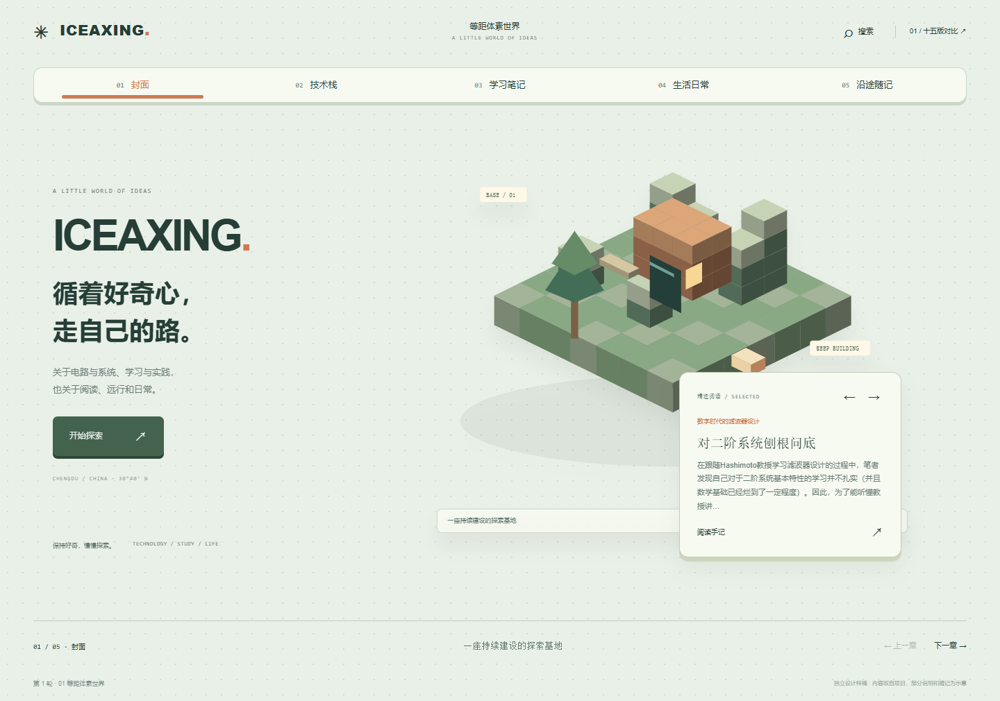

01FIFTEEN WAYS TO TELL THE SAME JOURNEY
同一段旅程，
十五种美术语言。
保留封面、技术栈、学习笔记、生活日常、沿途随记。
改变的是图像、材质、构图、卡片与运动方式。
ROUND 01
从已有博客调研出发：立体、线描、漫画、网点与雕版。


ROUND 02
从现代设计与材料出发：装饰艺术、几何、国际主义、蓝晒与纸雕。


ROUND 03
从另一组媒介出发：玻璃、陶土、像素、木版与复古未来。
FIFTEEN WAYS TO TELL THE SAME JOURNEY
保留封面、技术栈、学习笔记、生活日常、沿途随记。
改变的是图像、材质、构图、卡片与运动方式。
从已有博客调研出发：立体、线描、漫画、网点与雕版。
从现代设计与材料出发：装饰艺术、几何、国际主义、蓝晒与纸雕。
从另一组媒介出发：玻璃、陶土、像素、木版与复古未来。